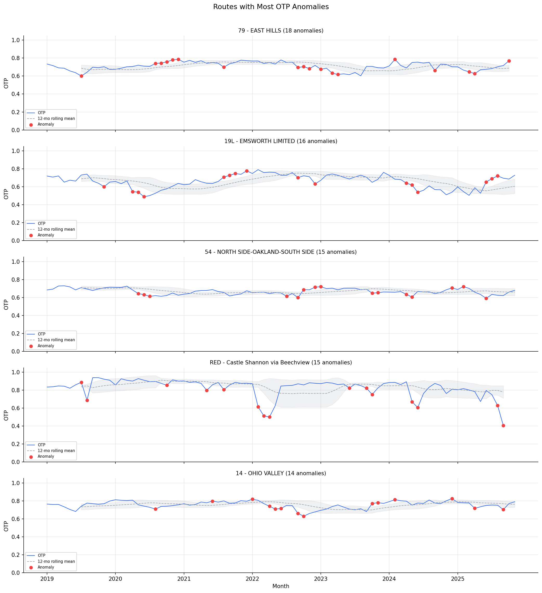

Analysis
05 - Anomaly Investigation
Core OTP Patterns
Coverage: 2019-01 to 2025-11 (from otp_monthly).
Built 2026-06-05 17:58 UTC · Commit 7493239
Page Navigation
Analysis Navigation
Data Provenance
flowchart LR
05_anomaly_investigation(["05 - Anomaly Investigation"])
t_otp_monthly[("otp_monthly")] --> 05_anomaly_investigation
01_data_ingestion[["Data Ingestion"]] --> t_otp_monthly
u1_01_data_ingestion[/"data/routes_by_month.csv"/] --> 01_data_ingestion
u2_01_data_ingestion[/"data/PRT_Current_Routes_Full_System_de0e48fcbed24ebc8b0d933e47b56682.csv"/] --> 01_data_ingestion
u3_01_data_ingestion[/"data/Transit_stops_(current)_by_route_e040ee029227468ebf9d217402a82fa9.csv"/] --> 01_data_ingestion
u4_01_data_ingestion[/"data/PRT_Stop_Reference_Lookup_Table.csv"/] --> 01_data_ingestion
u5_01_data_ingestion[/"data/average-ridership/12bb84ed-397e-435c-8d1b-8ce543108698.csv"/] --> 01_data_ingestion
t_routes[("routes")] --> 05_anomaly_investigation
01_data_ingestion[["Data Ingestion"]] --> t_routes
d1_05_anomaly_investigation(("polars (lib)")) --> 05_anomaly_investigation
classDef page fill:#dbeafe,stroke:#1d4ed8,color:#1e3a8a,stroke-width:2px;
classDef table fill:#ecfeff,stroke:#0e7490,color:#164e63;
classDef dep fill:#fff7ed,stroke:#c2410c,color:#7c2d12,stroke-dasharray: 4 2;
classDef file fill:#eef2ff,stroke:#6366f1,color:#3730a3;
classDef api fill:#f0fdf4,stroke:#16a34a,color:#14532d;
classDef pipeline fill:#f5f3ff,stroke:#7c3aed,color:#4c1d95;
class 05_anomaly_investigation page;
class t_otp_monthly,t_routes table;
class d1_05_anomaly_investigation dep;
class u1_01_data_ingestion,u2_01_data_ingestion,u3_01_data_ingestion,u4_01_data_ingestion,u5_01_data_ingestion file;
class 01_data_ingestion pipeline;
Findings
Findings: Anomaly Investigation
Summary
842 anomalous months were flagged across 94 routes using a rolling z-score method with a lagged window (current month excluded from the baseline). The detection is two-sided, flagging both sharp drops and spikes. Anomalies cluster in time (COVID, late 2022) rather than being randomly distributed, suggesting system-wide shocks.
Methodology Note
The anomaly detector uses a 12-month rolling window shifted by one month, so the current observation is never included in its own baseline. This prevents self-dampening of z-scores and produces more sensitive detection (842 anomalies vs. 406 with the unshifted approach). When the rolling standard deviation is near zero (constant OTP over the window), z-scores are set to 0.0 to avoid division-by-zero artifacts.
Routes with Most Anomalies
| Route | Anomalies |
|---|---|
| 79 - East Hills | 18 |
| 19L - Emsworth Limited | 16 |
| RED - Castle Shannon via Beechview | 15 |
| 54 - North Side-Oakland-South Side | 15 |
| 28X - Airport Flyer | 14 |
Anomaly Rates by Mode
| Mode | Anomalies | Total Months | Rate |
|---|---|---|---|
| BUS | 801 | 6,794 | 11.8% |
| RAIL | 32 | 224 | 14.3% |
| UNKNOWN | 9 | 58 | 15.5% |
RAIL routes show a slightly higher anomaly rate (14.3%) despite consistently high OTP. This is because their performance is normally very stable, so even moderate dips trigger the 2-sigma threshold. The 5 UNKNOWN-mode routes (RLSH, P2, 42, SWL, 37) are included in the analysis; most have very few months of data.
Expected vs Actual False-Positive Rate
With 7,076 evaluated route-month observations and a 2-sigma two-sided threshold, the expected false-positive rate under normality is approximately 4.6%, yielding ~322 expected false positives. The actual count of 842 anomalies is 2.6x the null expectation, indicating that a substantial majority of flagged anomalies reflect genuine OTP deviations beyond what random variation would produce. However, roughly 300-350 of the 842 could be expected by chance alone, so not every flagged anomaly should be interpreted as a "real" event.
Lagged-Window Trend Bias
The lagged rolling window introduces a systematic bias for trending routes. When a route's OTP is declining, the baseline (computed from the prior 12 months) is always slightly above the current value, making negative anomalies more likely. Conversely, improving routes are biased toward positive anomalies. This means the anomaly detector is more sensitive to deviations in the direction of the trend. No detrending is applied, so some fraction of flagged anomalies may reflect gradual trends rather than abrupt shocks.
Key Anomaly Clusters
- March--June 2020 (COVID): Many routes showed positive anomalies -- OTP improved because reduced ridership meant less dwell time and fewer delays. This was a temporary artifact, not genuine improvement.
- Late 2022: A cluster of negative anomalies across many routes, coinciding with the system-wide OTP trough (58% in September 2022). May indicate staffing shortages, construction, or service restructuring.
- Route 79 (East Hills): The most anomaly-prone route, with 18 flagged months, indicating persistent instability in schedule adherence.
Excluded Routes
4 routes were excluded from anomaly detection because they have fewer than 7 months of data (the rolling window requires shift(1) + min_samples=6):
| Route | Months |
|---|---|
| 37 - Castle Shannon | 3 |
| 53 - Homestead Park | 2 |
| 42 - Potomac | 3 |
| RLSH - Red Line Shuttle | 3 |
Observations
- The lagged window methodology results in more anomalies being flagged, particularly for routes with gradual trends, since the baseline is always slightly behind.
- Rail routes (RED, BLUE) have many anomalies despite high average OTP because their performance is normally very consistent, so even moderate dips trigger the 2-sigma threshold.
- The z-score method requires at least 6 months of rolling history, so the first few months of each route's data are not evaluated.
- 5 UNKNOWN-mode routes are included in the analysis (RLSH, P2, 42, SWL, 37). Most have very few months of data.
Caveats
- Without external data (PRT service advisories, construction records, staffing reports), anomalies can only be flagged, not explained.
- The known events dictionary is limited to COVID dates. More events could be added with PRT service change records.
Review History
- 2026-02-11: RED-TEAM-REPORTS/2026-02-11-analyses-01-05-07-11.md -- 7 issues (1 significant). Added division-by-zero guard for z-scores, mode-stratified anomaly rates, false-positive rate context, trend bias documentation, excluded route documentation, two-sided detection clarification, and UNKNOWN-mode route documentation.
Output

time series for routes with most anomalies.
No interactive outputs declared.
all flagged anomaly months.
Preview CSV
Methods
Methods: Anomaly Investigation
Question
What explains sharp OTP deviations (both drops and spikes) for routes across the system? Are they real performance issues or data artifacts?
Approach
- For each route, flag months where OTP deviates more than 2 standard deviations from the route's rolling 12-month mean (two-sided: both positive and negative deviations).
- Use a lagged rolling window (current month excluded from baseline) to prevent self-dampening of z-scores.
- Guard against division by zero: when rolling standard deviation is near zero (< 1e-9), set z-score to 0.0.
- Catalog all flagged anomalies with route, month, OTP value, and deviation magnitude.
- Cross-reference known events: COVID shutdowns (Mar 2020), PRT service restructurings, construction projects.
- Report anomaly rates stratified by mode (BUS, RAIL, UNKNOWN).
- Compare actual anomaly count to the expected false-positive rate under normality (~4.6% for a 2-sigma two-sided threshold).
- Routes with fewer than 7 months of data are excluded from anomaly detection due to the rolling window requirement (shift + min_samples=6).
Data
| Name | Description | Source |
|---|---|---|
otp_monthly |
Monthly OTP per route | prt.db table |
routes |
Route metadata | prt.db table |
Output
output/anomalies.csv-- all flagged anomaly monthsoutput/anomaly_profiles.png-- time series for routes with most anomalies
Source Code
|
Sources
| Name | Type | Why It Matters | Owner | Freshness | Caveat |
|---|---|---|---|---|---|
| otp_monthly | table | Primary analytical table used in this page's computations. | Produced by Data Ingestion. | Updated when the producing pipeline step is rerun. | Coverage depends on upstream source availability and ETL assumptions. |
Upstream sources (5)
|
|||||
| routes | table | Primary analytical table used in this page's computations. | Produced by Data Ingestion. | Updated when the producing pipeline step is rerun. | Coverage depends on upstream source availability and ETL assumptions. |
Upstream sources (5)
|
|||||
| polars | dependency | Runtime dependency required for this page's pipeline or analysis code. | Open-source Python ecosystem maintainers. | Version pinned by project environment until dependency updates are applied. | Library updates may change behavior or defaults. |